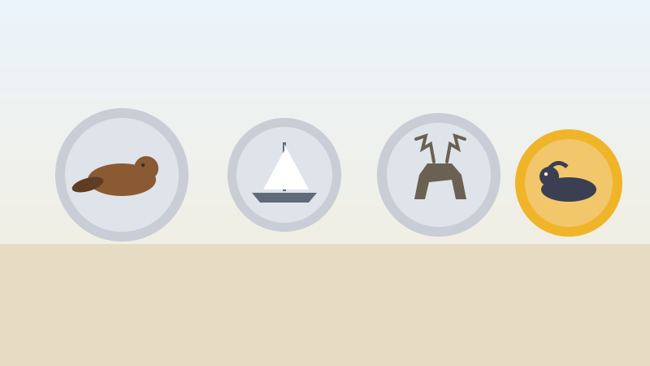

🪙 For Kids
The Animals Hiding in Your Pocket
Empty your change onto the table. Every coin has an animal or a ship on it.

The five cent coin has a beaver. It has been there since 1937. The beaver became an official symbol of Canada in 1975, because beaver fur is the reason many people first came here to trade.
The twenty-five cent coin has a caribou, also since 1937. The ten cent coin has a sailing ship, which you can read about in the story of the Bluenose.
The two dollar coin has a polar bear on a piece of floating ice. It arrived in 1996. People call it the toonie.
Now the strange one. The one dollar coin was supposed to show a canoe with a voyageur and an Indigenous guide paddling it. The metal stamps that print the design were sent across the country by courier in November 1986 to save money.
They never arrived. They were never found. Rather than risk somebody making fake coins, the Mint chose a completely different design: a common loon swimming on a lake.
The new coin came out in 1987. Canadians started calling it the loonie almost at once. Nobody knows who said it first, and now even the two dollar coin is named after it.
Now try three questions
No timer and no score to worry about. Every answer tells you why.
About this quiz
This story is about the animals on Canadian coins, and why the one dollar coin shows a loon instead of the canoe that was planned for it.
It is written in short sentences for children aged six to nine, with a picture drawn for this site and three questions at the end. Tap the Read aloud button and the page will read the questions out loud.